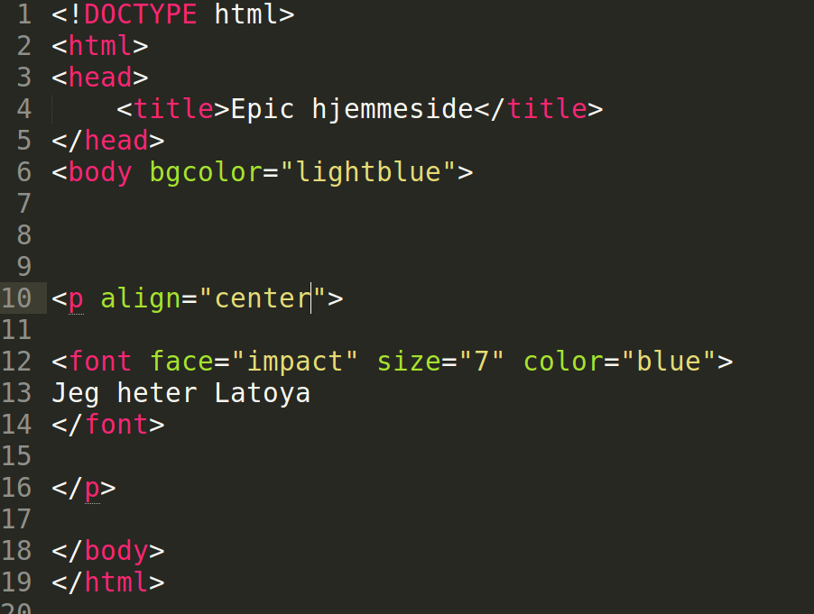

- Forann teksten din, skriv < p align="center" > (Bruken av < P> gjør at teksten kommer inne i en usynlig paragraf)
- Hvis du vil ha teksten på venster side; bytt ut center med left Hvis du vil ha den på høyre side; bytt ut center med right
- Husk å avslutte med < /p > etter teksten
- Lagre dokumentet , og oppdater hjemmesiden din i nettleseren for å se resultatet. Oppdatere gjør du ved å trykke F5 eller ↻